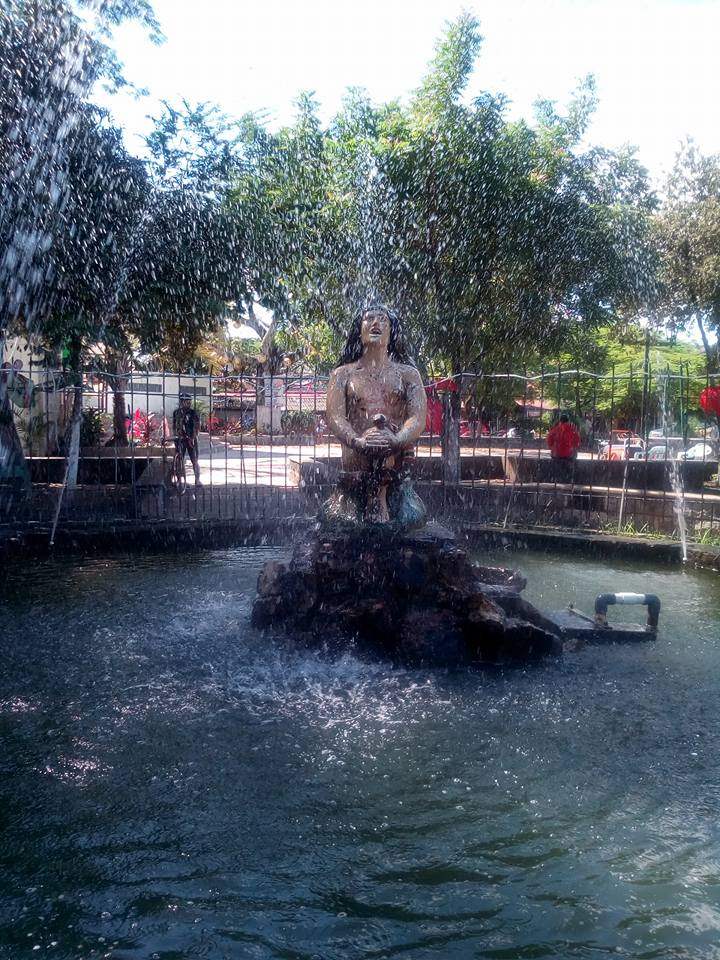

Si llegas en avión a Bogotá , vas a ver los cerros al oriente encumbrados por un
templo
que se destaca por su blancura. Ese es Monserrate el cerro que se ha convertido en el lugar imperdible y
punto de referencia de la ciudad.Allí llegan a diario cientos de personas deseosas de conocer uno de los
lugares de peregrinación de Bogotá, a tener una de las mejores panorámicas de la ciudad y a disfrutar de
la
naturaleza de este lugar donde aún se conservan algunos bosques de páramo.El clima de este cerro es mucho
más frío que el de la misma ciudad, por este motivo hay que subir con ropa abrigada y si te animas podrás
tomarte un chocolate con queso y almojábana o un canelazo (agua de panela caliente con canela y
aguardiente).
El cerro de Monserrate es el más conocido de los cerros Orientales de Bogotá. Junto a Guadalupe es uno de
los cerros titulares de la ciudad. Monserrate tiene una altitud de 3152 m y se ubica sobre la cordillera
oriental.Los cerros de Bogotá, de origen sedimentario, tienen por lo menos 16 millones de años de
antigüedad, con rocas de edad cretácica pertenecientes al Grupo guadalupe, en lo que se refiere al
aspecto
geológico. Hasta mediados del siglo XVII fue conocido como cerro de Las Nieves.La basílica del Señor de
Monserrate ha sido lugar de peregrinación religiosa desde la época colonial y se constituye en un
atractivo
natural, religioso, gastronómico de la ciudad. Se puede ascender al cerro por el sendero peatonal, por
teleférico o por funicular.
El Museo Botero está situado en La Candelaria, centro histórico y cultural de Bogotá
(Colombia) (calle 11, carrera 4-93). Alberga una numerosa colección de obras donadas a Colombia por el
artista Fernando Botero con la intención de difundir las artes y la cultura en su país natal. De las
obras,
87 corresponden a su colección personal de arte universal y el resto, cerca de 123 piezas, fueron
realizadas por el mismo artista. En el año 2000, Fernando Botero donó está colección al Banco de la
República y a la ciudad de Bogotá, con el propósito de hacer las obras accesibles a toda la población
colombina. La colección se exhibe en los salones de la antigua Hemeroteca Luis López de Mesa,
posteriormente conocida como Casa de Exposiciones y ahora sede permanente del Museo Botero.
La colección de cerca de 123 piezas incluye numerosos óleos, dibujos, pasteles, sanguinas y esculturas
realizadas por Botero especialmente durante los últimos veinte años. Su producción más temprana
(cuarentas,
cincuentas y sesentas) no se encuentra representada. Estos períodos pueden encontrarse en la exposición
permanente del Museo Nacional de Colombia, también en Bogotá.Dentro de la colección se destaca una
versión
boteriana de la "Monalisa" de Leonardo da Vinci y una parte de la primera serie sobre la violencia en
Colombia ("Pablo Escobar", "Tirofijo", "Carrobomba", "La masacre de Mejor Esquina", etc.), entre otras.
La
última serie sobre la violencia en Colombia, está en la colección del Museo Nacional de
Colombia.Igualmente, en el segundo piso hay una sala dedicada a esculturas de pequeño y mediano formato
elaboradas en bronce y mármol.
Fascinada por el viaje, Lina Sanchez ha visitado fascinantes lugares turisticos en Bogotá, Carmen de Apicala, Melgar, Ibagué y demás, en donde ha encontrado no solamente personas maravillosas, esquixita comida tipica, sino también maravillosos rincones que todo el mundo deseará conocer al venir y conocer a la maravillosa Colombia.